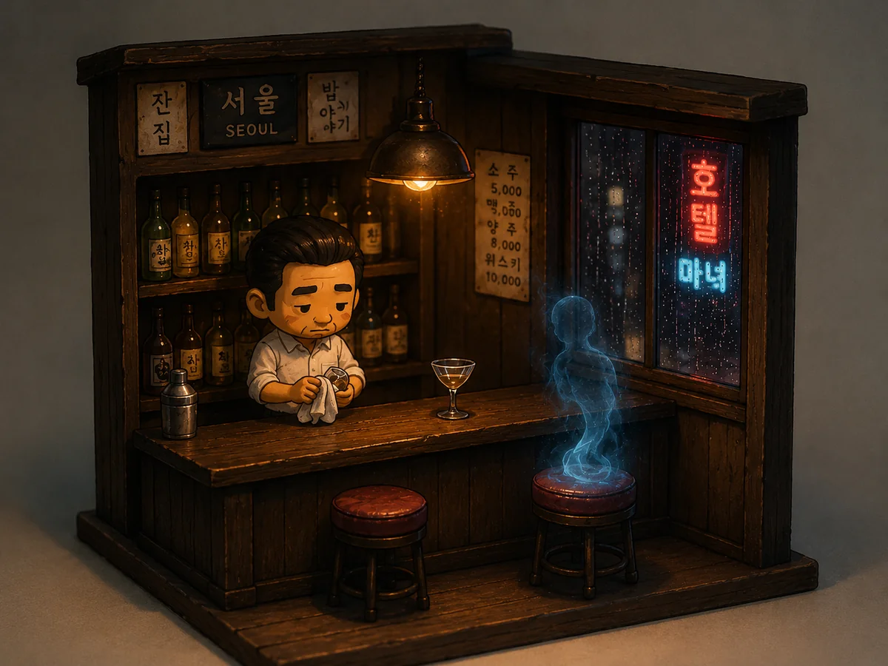

문이 열렸어요.
한도식은 잔을 닦고 있었어요.
한 남자가 들어왔어요.
[The door opened. Han Dosik was wiping a glass. A man came in.]
“아직 영업해요?”
“네. 앉으세요.”
[”Still open?” “Yes. Have a seat.”]
남자가 바 앞에 앉았어요.
한도식은 그를 봤어요. 어디서 본 얼굴이었어요.
[The man sat at the bar. Dosik looked at him. A face from somewhere.]
“뭐 드릴까요?”
“검은 바람 한 잔이요.”
[”What can I get you?” “One Black Wind.”]
한도식은 멈췄어요.
[Dosik froze.]
“그 술은 메뉴에 없어요. 10년 전에 없어졌어요.”
“알아요.”
“왜 그걸 시켜요?”
“옛날에 좋아했어요.”
[”That drink isn’t on the menu. It disappeared ten years ago.” “I know.” “Why order it?” “I used to love it.”]
한도식은 천천히 술을 만들었어요.
손이 아직 기억하고 있었어요.
잔을 남자 앞에 놓았어요.
[Dosik made the drink slowly. His hands still remembered. He set the glass in front of the man.]
“저를 기억해요?” 남자가 물었어요.
한도식은 남자의 얼굴을 다시 봤어요.
[”Do you remember me?” the man asked. Dosik looked at his face again.]
“백시현 씨?”
“네.”
“백시현 씨는… 10년 전에…”
“죽었지요. 알아요.”
[”Baek Sihyeon?” “Yes.” “Sihyeon, ten years ago you…” “Died. I know.”]
한도식은 아무 말도 못 했어요.
백시현은 웃었어요.
[Dosik couldn’t say anything. Sihyeon smiled.]
“매주 금요일 여기 왔어요. 안 보였지요?”
“안 보였어요.”
“오늘은 보이네요. 이상해요.”
[”I came every Friday. You couldn’t see me, right?” “I couldn’t.” “Today you can. Strange.”]
백시현은 술을 한 모금 마셨어요.
“맛있어요. 도식 씨, 고마워요.”
“왜 고마워요?”
“10년 동안 기다려 줘서요.”
[Sihyeon took a sip. “Delicious. Dosik, thank you.” “Thank me for what?” “For waiting ten years.”]
백시현은 일어났어요. 문 쪽으로 갔어요.
“잠깐만요. 왜 오늘은 보여요?”
[Sihyeon stood. He walked to the door. “Wait. Why can I see you today?”]
백시현은 문 앞에서 멈췄어요.
한도식을 봤어요. 조용히 웃었어요.
[Sihyeon stopped at the door. He looked at Dosik. He smiled quietly.]
“오늘이 도식 씨 차례예요.”
[”Today it’s your turn, Dosik.”]
백시현은 나갔어요.
[Sihyeon left.]
한도식은 바를 봤어요.
잔이 있었어요. 비어 있었어요.
옆에 신문이 있었어요. 오늘 신문이었어요.
[Dosik looked at the bar. The glass was there. Empty. Beside it, a newspaper. Today’s paper.]
1면에 사진이 있었어요.
한도식의 사진이었어요.
[On the front page, a photo. A photo of Dosik.]
“바 주인 한도식, 어젯밤 사망.”
[”Bar owner Han Dosik, died last night.”]
문 밖에서 백시현이 기다리고 있었어요.
[Outside the door, Baek Sihyeon was waiting.]